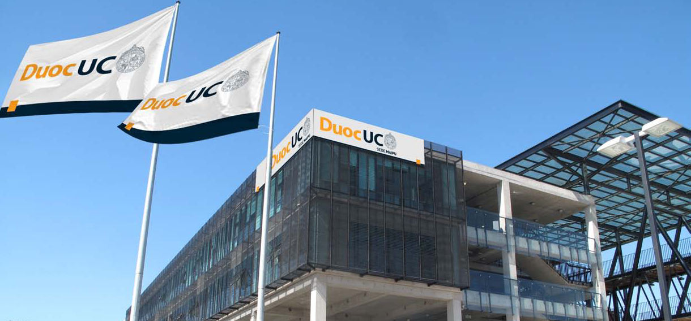

Sedes / Maipú



Descripción
Nuestra sede cuenta con una amplia oferta educacional para la zona sur poniente de la Región Metropolitana y pretende convertirse en un actor relevante en la formación, especialización y actualización de profesionales y técnicos que posean las competencias laborales requeridas en el ámbito de la construcción, ingeniería y salud. Duoc UC Sede Maipú inicialmente concentra su oferta académica en 12 carreras de nivel técnico y profesional en jornadas diurnas y vespertina, así como en la organización y dictación de una amplia variedad de programas de educación continua y capacitación. En su primera etapa se han construido 10.183 m2 en dos amplios edificios de cinco plantas cada uno, poniendo a disposición de los alumnos modernas instalaciones como laboratorios, talleres y aulas que están dotadas con equipamiento tecnológico de última generación, todo lo cual está emplazado en un terreno de 24.730 m2, con grandes extensiones de áreas verdes y recintos deportivos. La amplitud y funcionalidad de su construcción, acorde con una arquitectura de vanguardia, permitirá a Duoc UC consolidarse como un paradigma en el ámbito de la educación superior vocacional, estrechamente vinculado a la comunidad local y a su servicio y también al del país. Duoc UC Sede Maipú invita a todos los interesados a participar de una nueva experiencia formativa y aprovechar cada una de las oportunidades que aquí encontrarán, no solamente en el plano académico, sino también en lo social, cultural, pastoral y deportivo. P: Presenciales PEV: Programa Ejecutivo Vespertino
Carreras que se imparten
Construcción
Dibujo Arquitectónico y Estructural (Diurno)Ingeniería en Construcción (Diurno/Vespertino)
Ingeniería en Prevención de Riesgos (Diurno/Vespertino)
Técnico en Construcción (Diurno/Vespertino)
Técnico en Prevención de Riesgos Pev (Vespertino)
Ingeniería
Ingeniería en Electricidad y Electrónica (Diurno/Vespertino)Ingeniería en Mecánica Automotriz y Autotrónica (Diurno/Vespertino)
Técnico en Electricidad y Electrónica (Diurno/Vespertino)
Técnico en Instrumentación y Automatización Industrial (Diurno/Vespertino)
Técnico en Mantenimiento Industrial (Diurno/Vespertino)
Técnico en Maquinaria y Vehículos Pesados (Diurno/Vespertino)
Técnico en Mecánica Automotriz y Autotrónica (Diurno/Vespertino)
Salud
Fisioterapeuta Deportivo (Diurno)Preparador Físico (Diurno)
Técnico de Enfermería (Diurno/Vespertino)
Técnico en Odontología (Diurno/Vespertino)